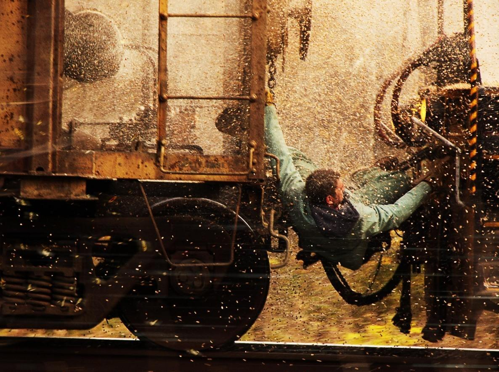
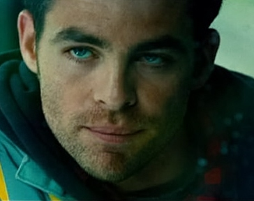
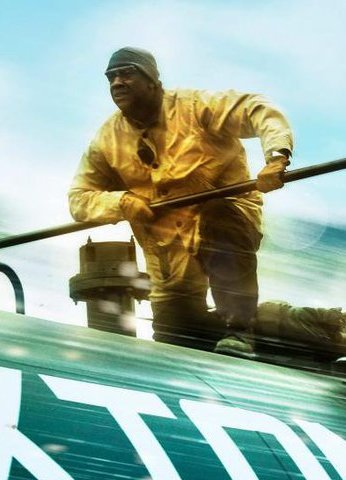

Лучшие фильмы с Дензелом Вашингтоном
|
|---|
 


Неуправляемый (Unstoppable)Н еуправляемый — американский фильм-катастрофа по сценарию Марка Бомбэка с Дензелом Вашингтоном и Крисом Пайном в главных ролях. Последняя режиссёрская работа Тони Скотта повествует о двух железнодорожниках, которые пытаются остановить неуправляемый поезд с токсичным грузом. В США фильм вышел в прокат 12 ноября 2010 года. Потерявший управление огромный беспилотный локомотив с токсичным грузом несется, сметая все на своем пути. Но главная опасность состоит в том, что если он сойдет с рельсов на очередном вираже, химической катастрофы не избежать. Все силы задействованы, все попытки остановить монстра тщетны, планов на спасение не осталось. Впрочем… |
Меню |
Перейти к просмотру в кинотеатре |